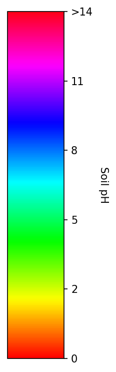

<!DOCTYPE html>
<html lang="en">
<head>
  <meta charset="UTF-8">
  <meta name="viewport" content="width=device-width, initial-scale=1.0">
  <title>Leaflet GeoTIFF Tiles</title>
  <link rel="stylesheet" href="https://unpkg.com/leaflet/dist/leaflet.css" />
  <style>
    #map { height: 100vh; }
    .legend {
      line-height: 18px;
      color: #555;
      background: white;
      padding: 8px;
      border-radius: 5px;
      box-shadow: 0 0 15px rgba(0,0,0,0.2);
    }
    .legend img {
      width: 120px;  /* adjust to your legend size */
      display: block;
    }
  </style>
</head>
<body>

<div id="map"></div>

<script src="https://unpkg.com/leaflet/dist/leaflet.js"></script>

<script>
  // Initialize map
  const map = L.map('map').setView([41.99, -93.74], 12);

  // Add basemap
  const osm = L.tileLayer('https://{s}.tile.openstreetmap.org/{z}/{x}/{y}.png', {
    attribution: '&copy; OpenStreetMap contributors'});

  const satellite = L.tileLayer(
    'https://server.arcgisonline.com/ArcGIS/rest/services/World_Imagery/MapServer/tile/{z}/{y}/{x}', {
    attribution: 'Tiles &copy; Esri'});

    osm.addTo(map); // default


  // Define raster bounds
  const southWest = L.latLng(41.8821460, -93.8336951);
  const northEast = L.latLng(42.0996281, -93.6558287);
  const rasterBounds = L.latLngBounds(southWest, northEast);

  const BoundedTileLayer = L.TileLayer.extend({
    createTile: function(coords, done) {
      const tileBounds = this._tileCoordsToBounds(coords);
      if (!rasterBounds.intersects(tileBounds)) {
        const empty = document.createElement('div');
        setTimeout(() => done(null, empty), 0);
        return empty;
      }
      return L.TileLayer.prototype.createTile.call(this, coords, done);
    }
  });

  // Add your raster tiles
  const phLayer = new BoundedTileLayer('page_files/maps/PH/tiles/{z}/{x}/{y}.png', {
    attribution: 'pH Map Tiles',
    opacity: 1,
    noWrap: true
  }).addTo(map);

  // Layer control
  L.control.layers(
    { 
      "OpenStreetMap": osm,
      "Satellite Imagery": satellite
    }, 
    { 
      "Soil pH": phLayer
    }
  ).addTo(map);


  // Add scale bar
  L.control.scale({ position: 'bottomleft', imperial: false }).addTo(map);

  // Add legend (custom control)
  const legend = L.control({position: 'bottomright'});
  legend.onAdd = function () {
    const div = L.DomUtil.create('div', 'legend');
    div.innerHTML = `
      <strong>Soil pH</strong><br>
      
    `;
    return div;
  };
  legend.addTo(map);

  // Fit map view to raster
  map.fitBounds(rasterBounds);

  // Constrain map to raster extent
  map.setMaxBounds(rasterBounds);
  map.setMinZoom(9);
  map.setMaxZoom(18);
</script>

</body>
</html>


